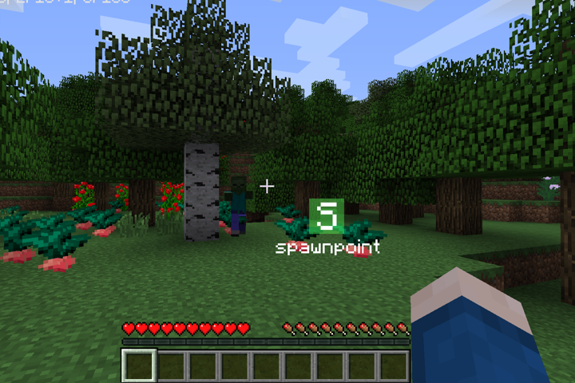
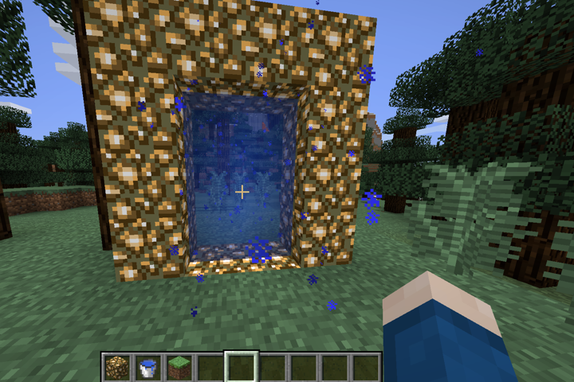
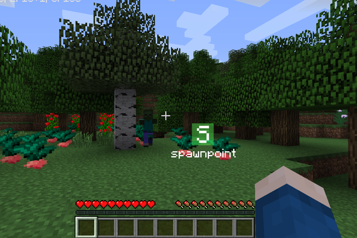
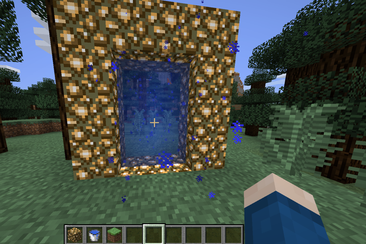

Reyes&Friends Server
Bienvenidos a "Reyes&Friends Server", un servidor Premium de Minecraft modificado para la versión 1.7.10, creado por "AstronautMarkus" en nombre de "ReyesAndFriends". Este servidor está diseñado con fines experimentales y tendrá una duración limitada.
Modalidad de Juego:
El servidor opera en modo Survival, donde no existen rangos administrativos para ningún usuario, incluyendo al creador. La única forma de sobrevivir en este mundo es colaborando mutuamente o por tu propia cuenta.
Características del Servidor:
- Versión 1.7.10: Disfruta de una experiencia nostálgica con esta versión clásica de Minecraft.
- Mods Variados: El servidor incluye una variedad de mods que introducen nuevas entidades, algunas pasivas y otras bastante hostiles.
- Mod Legendario: Destacamos la inclusión del legendario mod que permite ir al cielo, "The Aether Mod". añadiendo una dimensión completamente nueva para explorar.
Nota importante
Este proyecto es meramente experimental y, por lo tanto, estará activo solo por un tiempo limitado. Aprovecha la oportunidad para unirte a esta aventura única y experimentar con los mods incluidos.
Capturas
 



Descargar Modpack
Recuerda que este servidor usa Mods, especialmente para la 1.7.10. Si no tienes Forge instalado, descárgalo desde aquíLuego de eso, descarga el archivo .zip con todos los mods incluidos para jugar en nuestro servidor. Dentro del archivo, encontrarás instrucciones detalladas sobre cómo instalar y configurar los mods.
Antes que todo:
Ninguna de las modificaciones incluidas en el modpack me pertenece. Todos los créditos van para sus respectivos autores. Download ModpackDiviértete lo más que se pueda. 
Información del Servidor
IP del servidor: reyesdatabase.ddns.net
Jugadores online:
Cantidad de Mods activos:
Sobre mí:
Soy 'AstronautMarkus', un apasionado desarrollador y estudiante de informática con un fuerte interés en los videojuegos y la creación de proyectos con impacto social, eso creo...
Conéctate Conmigo:
Correo electrónico: astronautmarkus@gmail.com
GitHub: AstronautMarkus
Proyectos:
Actualmente estoy trabajando en varios proyectos de software, incluyendo aplicaciones en Django y Node.js, y explorando el mundo de los servidores de Minecraft con mods.En fin eso po, un saludito especial a Seven Jackson y a Sword. Chau pórtense bien.